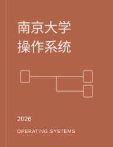
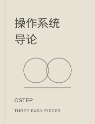
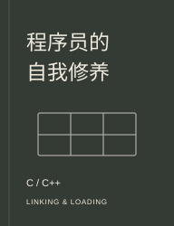

课程、书籍与图文笔记，随时接着读。

课程 · 蒋炎岩 · 2026 · 30 课
从进程与系统调用出发，走过并发、存储与安全，理解软件怎样在硬件上运行。

书籍 · OSTEP · 50 章 · 7 个附录
围绕虚拟化、并发与持久性，用问题、代码与实验，逐步理解操作系统的设计。

书籍 · 13 章 · Linux 与 Windows
沿着一个 C/C++ 程序的生成与执行，读懂目标文件、链接器、装载器和运行库。
没有找到相关内容，试试其他关键词。